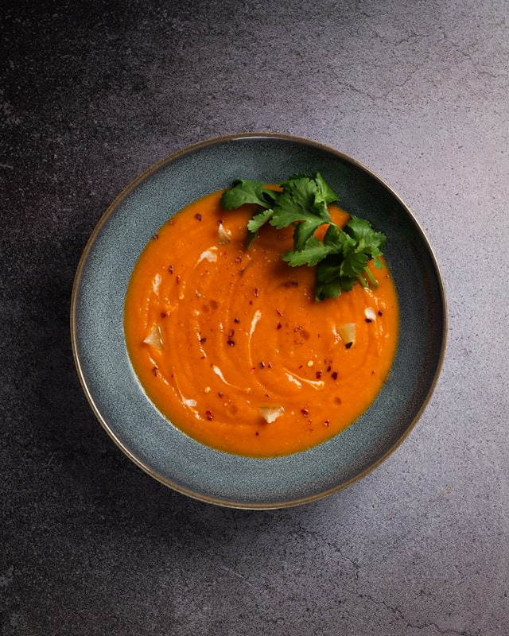

Roasted Red Pepper and Tomato Soup

Description
Roasted red pepper and tomato soup to celebrate the end of summer heat. Make a giant batch to freeze for cooler weather! Recipe yields a lot of soup (about 12 cups), and leftovers freeze well.
Ingredients
- 8 to 9 medium tomatoes (about 5 pounds), cored and quartered
- 3 red bell peppers (about 1 pound), seeded and quartered
- 2 small yellow onions, cut into wedges about ¾″ wide on the outer edges
- 2 tablespoons extra virgin olive oil, divided
- 6 cloves garlic, unpeeled
- 4 cups (32 ounces) vegetable broth
- ¼ teaspoon smoked paprika
- Pinch of cayenne pepper (omit if sensitive to spice)
- Fine salt and freshly ground black pepper, to taste
Steps
- Preheat your oven to 375 degrees Fahrenheit with racks in the upper third and middle of the oven. Line two large, rimmed baking sheets with parchment paper.
- Place the tomatoes on one of the prepared baking sheets. Place the bell peppers and onions on the other baking sheet. Drizzle 1 tablespoon olive oil over each baking sheet.
- Gently toss the tomatoes until lightly coated in oil, then position the tomatoes so the skin sides are facing down. Set aside.
- Gently toss the onions and red peppers until they are lightly coated in oil (try to keep the onion wedges intact as best you can). Position the red peppers with the skin sides facing down. Place the unpeeled garlic cloves on the sheet, too.
- Place the tomatoes on the top rack of the oven and the peppers and onion on the middle rack. Bake for 35 to 45 minutes, until the vegetables are tender throughout and turning nicely golden on the edges.
- When the vegetables are done, bring the vegetable broth to boil in a large soup pot over medium-high heat. Peel your garlic and toss it in. Add the roasted vegetables, smoked paprika, cayenne pepper, if using, and ¼ teaspoon salt. Simmer for 10 minutes, reducing heat as necessary to maintain a steady simmer.
- Purée the soup using an immersion blender or transfer the soup to a blender in batches, several cups at a time. Season to taste with salt (I added another ½ teaspoon) and pepper. This soup keeps well, covered and refrigerated, for 4 days in the refrigerator, or in the freezer for up to 6 months.